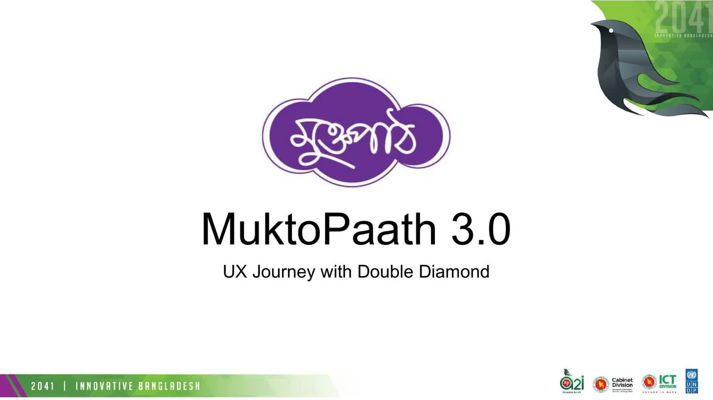
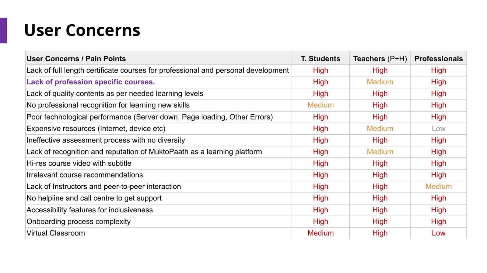
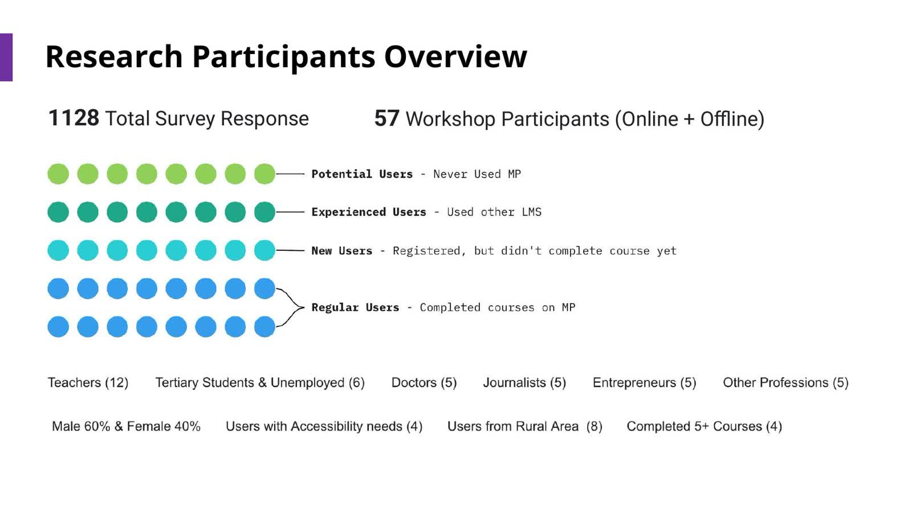
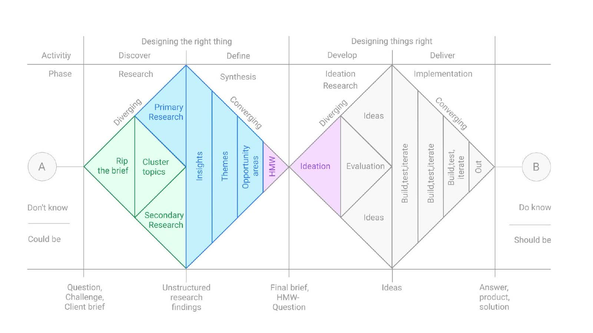
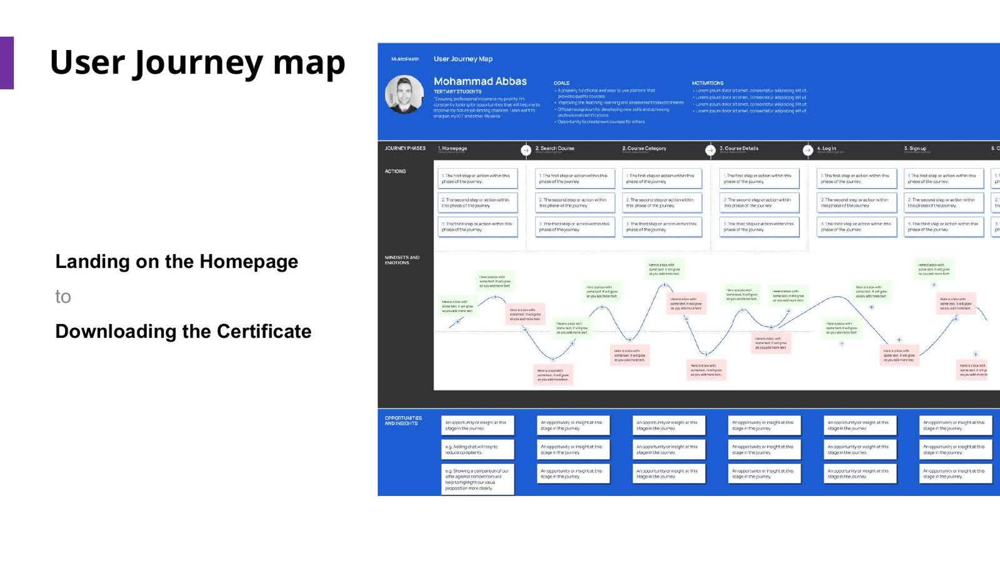
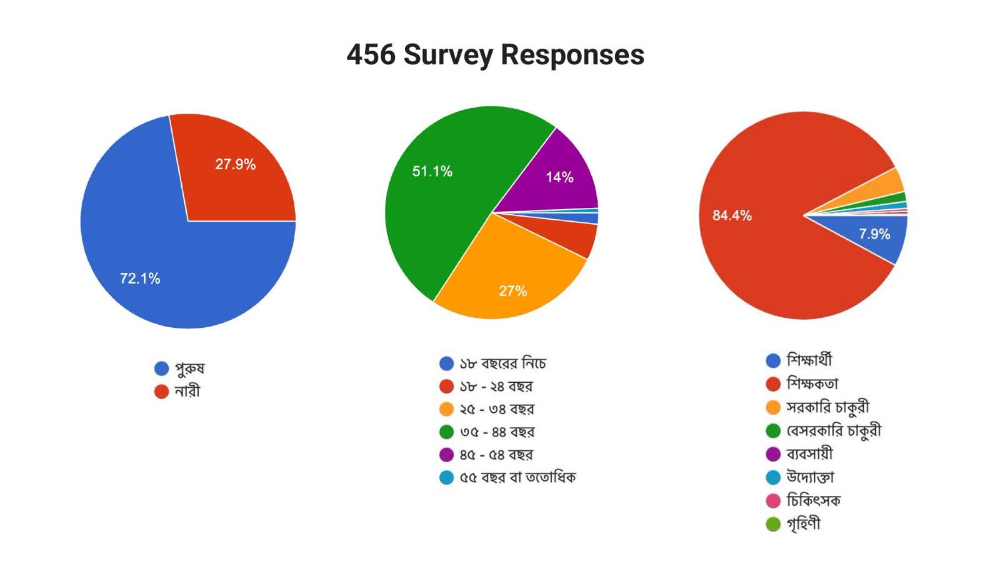

Experience Structure
Clarified navigation and decision points across the journey from homepage to lesson completion and certification.
Case Study
Structuring a national learning platform for clearer journeys, better accessibility, and stronger service performance at scale.
MuktoPaath is a Bangladesh government learning platform designed for broad and diverse learner groups. My role focused on bringing product clarity to a complex ecosystem through research, framework-led decisions, and system-level UX direction.

Context
MuktoPaath serves learners, teachers, professionals, and broader citizen groups through open digital learning. By the time this phase started, the platform had clear value but also visible friction in navigation, content access, and task completion. The work mattered because product usability and accessibility were directly linked to the platform's educational impact.
Instead of treating this as isolated UI cleanup, we treated it as a product structure challenge in a public-sector context where scale, inclusion, and operational practicality all had to coexist.

The Problem
Users were getting blocked in core learning tasks, from platform navigation to lesson progression and content discovery. The deeper issue was that product logic, information architecture, and workflow consistency needed stronger structure for large and diverse user populations.
Complexity
This work involved complexity across:
Strategic Approach
My approach focused on three things:


Solution Logic
Instead of treating the task as a screen redesign, we approached it as a system design problem. The direction focused on improving learning flow architecture, reducing interaction ambiguity, and making the platform easier to evolve.
Clarified navigation and decision points across the journey from homepage to lesson completion and certification.
Prioritized accessibility-oriented requirements, including stronger offline support expectations surfaced in research.
Structured opportunity areas around personalization, content contribution, ratings/reviews, and operational scaling.

Outcomes
The outcome was a clearer product direction grounded in validated user needs. More importantly, the work created stronger foundations for consistency, accessibility, and future platform scaling.

Reflection
This project reinforced a core leadership lesson: in complex products, strong design is less about polishing isolated screens and more about creating enough structure for teams and users to move with clarity.
It also demonstrated the value of rigorous mixed-method research and iterative validation when designing for diverse populations in high-impact public systems.